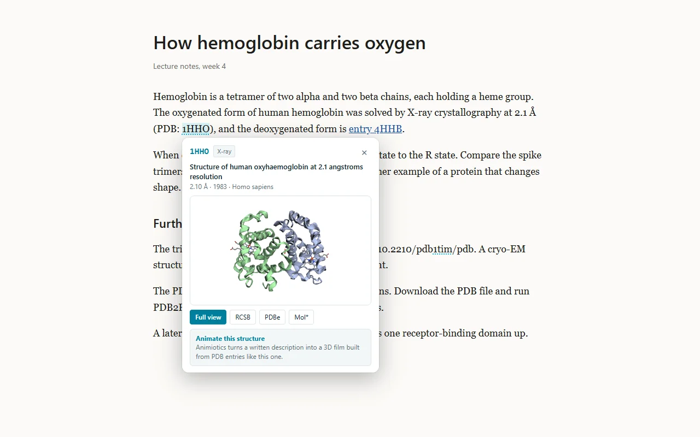
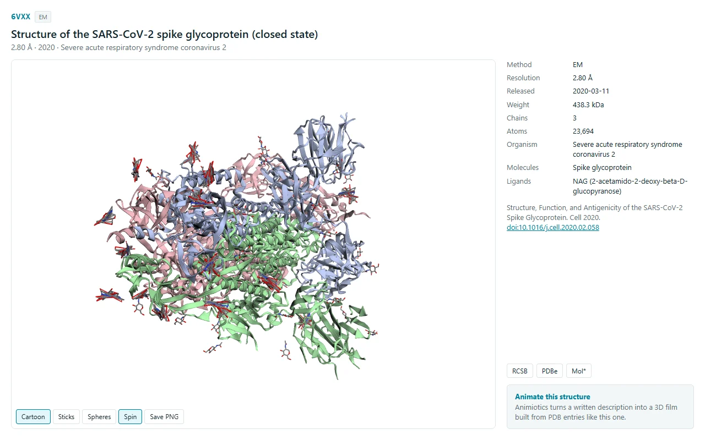
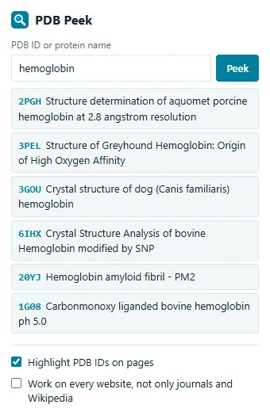

See any PDB entry in 3D without leaving the paper
PDB Peek is a free Chrome extension. Hover a PDB ID in an article, on Wikipedia or on a lab page and a card shows the structure in 3D with its method, resolution, organism and citation.

What it does
- Finds PDB IDs written in text, such as "PDB: 1HHO", "PDB IDs 6VXX, 6VYB and 6VSB" and "doi:10.2210/pdb1tim/pdb". It also marks links to RCSB, PDBe, PDBj, NCBI Structure and Mol*.
- Ignores look-alikes: "PDB 2023", "PDB2PQR" and "PDB file" are left alone.
- Opens a full view with cartoon, stick and sphere styles, chains, ligands, the primary citation and PNG export.
- Searches RCSB by ID or protein name from the toolbar button.
- Works on selected text: right-click and choose "Peek at PDB entry".


Where it runs
By default it runs on Wikipedia, PubMed, PMC, Europe PMC, RCSB, EBI, UniProt, bioRxiv, medRxiv, Proteopedia and the main journal sites. Turn on "Work on every website" in the popup to use it anywhere. Chrome asks for that permission separately and you can turn it off at any time.
Privacy
PDB Peek collects nothing: no analytics, no account, no tracking. To show an entry it requests that entry's metadata and coordinates from the RCSB Protein Data Bank. Privacy policy.
Credits
Structures and metadata come from the RCSB Protein Data Bank. 3D rendering uses 3Dmol.js (BSD-3-Clause). PDB Peek is MIT licensed.